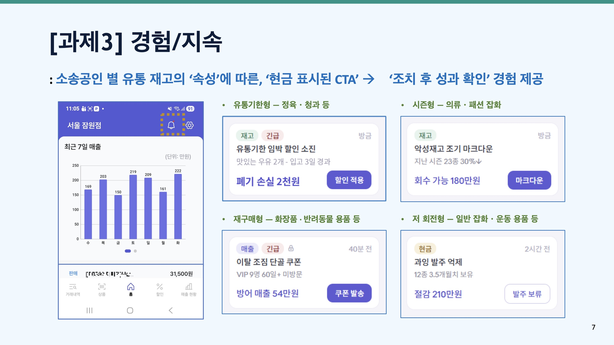

이 회사의 계산대 프로그램을 쓰는 가게는 1만 곳이 넘는다. 데이터를 분석해 보니 그중 7,500곳이 재고 관리를 전혀 하지 않았다. 창고에 뭐가 얼마나 있는지 모르니, 손님이 와도 못 팔거나 안 팔리는 물건이 쌓여 임대료도 못 버는 일이 생긴다. 사장님들은 데이터 대신 "감"으로 장사하고, 그 감을 넘어설 방법이 없다고 생각한다.
회사를 세운 지 10년 만에 처음으로 소상공인용 모바일 앱을 3개월 만에 만들어 사장님들과 직접 소통할 통로를 열었다. 회사에 쌓여 있던 사용 설명서(노션 문서)를 AI에게 주고 1분짜리 교육 영상으로 자동 변환해 앱으로 보낸다. 핵심은 "현금이 표시된 행동 지침"이다. 재고의 성격을 4가지로 나눠 "이 재고를 이번 주에 할인하면 약 30만 원이 돌아옵니다. 적용하시겠어요?" 같은 알림을 보내고, 사장님이 버튼 하나만 누르면 그 할인이 계산대에 바로 적용된다.
교육과 채널 확보는 절반 이상 완성됐고, 행동 지침 기능은 9월 시험을 거쳐 4분기 출시가 목표다. 심사위원은 "재고가 실시간 데이터로 잡히면 보험료를 매일 조정하는 새로운 보험 상품도 가능해진다"는 협업 아이디어까지 보탰다.